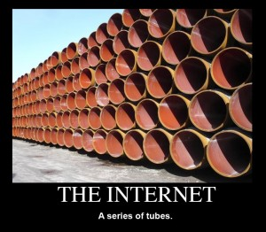
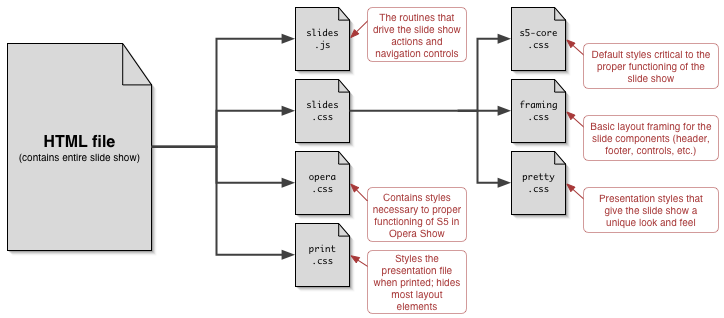

Beanstalkd:
- An Introduction
Senior (currently only) PHP Developer at Binweevils.com
Programming PHP since 1999, PHP v3, (11 years ago). Previously in everything from a
ZX81, BBC/Electron, 6502 to 8086 Assembler, Pascal and C/C++ before PHP
What Is A Job Queue?
Beanstalk is a simple, fast workqueue service. Its interface is
generic, but was originally designed for reducing the latency of page views in
high-volume web applications by running time-consuming tasks asynchronously.
Huh?
It's a big to-do list.
You send it a message, and then can retrieve it later
Why are job queues useful?
Many long running, or intensive tasks could be done in the background
- Background or Parallel Processing
- processing image or videos
- Sending out emails
- Fetching information in the background - like RSS feeds
- Preparing information for later use
Not generally time critical, as long as it gets done
Queueing via a database
- An obvious early step
- Not actually so well suitied, especially with many transactions
- x
Beanstalkd
Many language bindings are available
Quite easy to write, as it's a simple text-based format, ala Memcached
The daemon is equally dumb as a classic MemcacheD. Talking to multiple
servers is done from the client-side.
How It Works
- Queues: Acts as a message buffer between producer and consumer
- Daemon: When messages are released to the consumer/worker
- Producer: Creates messages that are put into the queue
- Consumer/Worker: Pulls messages from the queue, and works on them
The Advantages
- Parallel and asyncronous work
- Scales easily - run more workers
- - if the work can be done independently of data
- Call functionality written in other languages
Important Note
It's NOT a big truck
Beanstalkd is a series of TUBES

... The Internet is not something that you just dump something on. It's not a
big truck. It's a series of tubes. And if you don't understand, those tubes
can be filled and if they are filled, when you put your message in, it gets
in line and it's going to be delayed by anyone that puts into that tube
enormous amounts of material. - former United States Senator Ted Stevens (R-Alaska)
Killer features
- Tube names
- Priorities - 0 to 4,294,967,295 (2^32)
- Delay - do this after x seconds
- TTR - time to run, before it's made available again
image of priority and tubes

Features New to 1.1
- Incremental display of slide content
- Font scaling based on window size
- Support for PNG alpha channels in all supporting browsers, including IE/Win
- Ability to jump to any slide, or skip a number of slides, via keyboard commands
Incremental Animation
- A demonstration of just one of the many ways to accomplish simple animation-like effects (using a diagram from "XFN and...")
Current Limitations
- Only one author can be listed in the metadata
- Opera falls back to use OperaShow; thus no extras (like the navigation menu or progress indication) are available
- Images are not scaled along with the text when the window size changes
Open To The Public
- S5 1.1 is released under an explicit Public Domain license
- Contributors to S5 must be willing to accept those terms
- In other words: if you submit a contribution, you are agreeing to abide by and place your contributions into the Public Domain along with S5
- On the other hand, anyone can freely use S5 for their own presentations or modify S5 to suit their needs
In Summary
- With minimal scripting, we have recreated and improved upon a (currently) browser-specific technology, making it cross-browser in the process
- New themes are just a matter of writing a new style sheet
- The S5 format is OSF 1.0 and XOXO compatible
- S5 is a very flexible and lightweight slide show system available for anyone to use